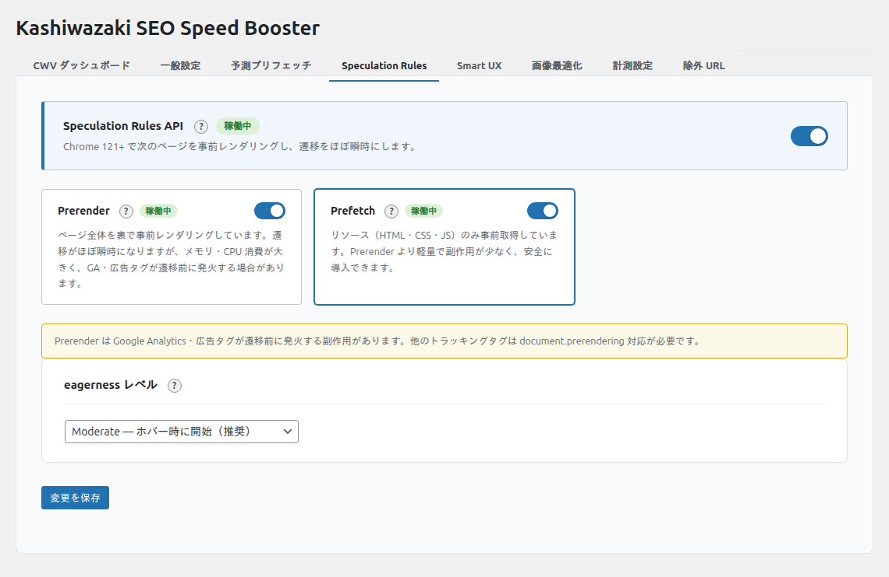

Speculation Rules
Speculation Rules API はブラウザ標準の機能で、ページの事前レンダリングや事前プリフェッチをブラウザに指示します。
Speculation Rules API とは
Speculation Rules API は Chrome 109 以降で利用可能なブラウザ標準の API です。従来の <link rel="prefetch"> と異なり、JSON ベースのルール定義で「どのページを」「どの積極度で」事前読み込みするかを宣言的に指定できます。特にプリレンダリング（事前レンダリング）を使うと、リンク先のページを完全にレンダリングした状態でメモリに保持するため、遷移がほぼ瞬時（0ms に近い LCP）になります。
ノート
Speculation Rules API は Chrome / Edge 109 以降で対応しています。非対応ブラウザでは <script type="speculationrules"> は無視され、サイトに影響を与えません。
設定画面

設定項目の詳細
事前レンダリング speculation_prerender
- リンク先のページを完全にレンダリングし、メモリに保持
- 遷移時にほぼ瞬時にページが表示される
- メモリ消費が大きいため、ブラウザが自動的に制限を適用
- eagerness に応じてブラウザが対象ページ数を調整
事前プリフェッチ speculation_prefetch
- リンク先のHTMLとサブリソースをダウンロードのみ
- レンダリングは行わないため、メモリ消費が少ない
- eagerness は固定で
conservative(クリック直前)
Eagerness(積極度) speculation_eagerness
4段階の積極度を設定可能:
| レベル | 説明 | 動作タイミング | 対象ページ数の目安 |
|---|---|---|---|
immediate |
即座に実行 | ルール検出時 | 最大約10ページ（Chrome 130時点） |
eager |
積極的に実行 | ルール検出時(やや控えめ) | 最大約10ページ（Chrome 130時点） |
moderate |
適度に実行 | ホバー時(200ms) | 最大2ページ（Chrome 130時点） |
conservative |
控えめに実行 | クリック直前(mousedown/pointerdown) | 1ページ（Chrome 130時点） |
ヒント
初めて使う場合は moderate(デフォルト)から始めることをお勧めします。サイトの動作を確認してから eager や immediate に変更してください。
除外パターンとの連携
除外URLパターンで指定した glob パターンは、Speculation Rules の not.href_matches に自動的に変換されます。これにより、除外対象のページは事前レンダリング・プリフェッチの対象からも自動的に外れます。
ノート
正規表現パターンは Speculation Rules API がサポートしていないため、glob パターンのみが除外に適用されます。正規表現で除外しているページがある場合は、glob パターンでも指定してください。
出力されるHTML
本機能を有効にすると、ページの <head> 内に以下のような JSON が出力されます。
<script type="speculationrules">
{"prerender":[{"where":{"and":[{"href_matches":"/*"},{"not":{"href_matches":["/wp-admin/*","*/cart/*"]}}]},"eagerness":"moderate"}]}
</script>予測プリフェッチとの違い
| 項目 | 予測プリフェッチ | Speculation Rules |
|---|---|---|
| 実装方式 | JavaScript (<link rel="prefetch">) |
ブラウザ API (<script type="speculationrules">) |
| レンダリング | なし(ダウンロードのみ) | あり(prerender時) |
| ブラウザ対応 | 全モダンブラウザ | Chrome/Edge 109+ |
| トリガー | JS で動的に制御 | ブラウザが宣言ルールで制御 |
| メモリ消費 | 少ない | 多い(prerender時) |
| 効果 | ページ読み込み高速化 | ほぼ瞬時のページ遷移 |
ヒント
両方を併用することで、Speculation Rules 非対応ブラウザには予測プリフェッチでカバーし、対応ブラウザではより高速な Speculation Rules が適用されます。